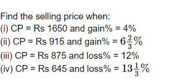
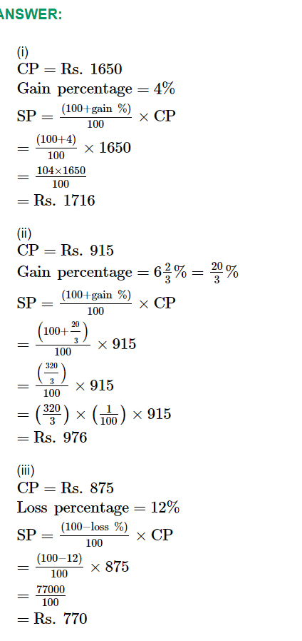

HOW TO FIND LOSS
Here we can see the new terms “Selling price” and “Actual Price” or “Cost Price.” Let us discuss what they refer to. Selling Price: The price of the product which was sold by the shopkeeper to the customer for a certain price is known as the selling price. can also be written as SP. To calculate the Selling Price,we have a formula i.e
Calculate Loss and Loss Percent
To calculate the Loss we need to know “What is Loss?” When we sold an item or a product less than it’s actual price, then Loss occurs which means the product is sold for a low price than the actual price. Now coming to the formula to calculate Loss we have
Loss(L)= Cost Price (CP) – Selling Price(SP)
QUES FOR PRACTICE
 